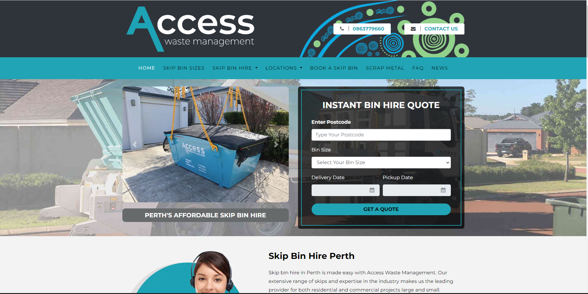

Logistics & BookingAccessWaste Australia
Digital waste management and online skipbin booking platform operating in Perth, Australia. Engineered customer ordering flows, real-time pricing calculators, and backend scheduling dispatch.
Laravel
PHP
Next.js
MySQL
Bootstrap